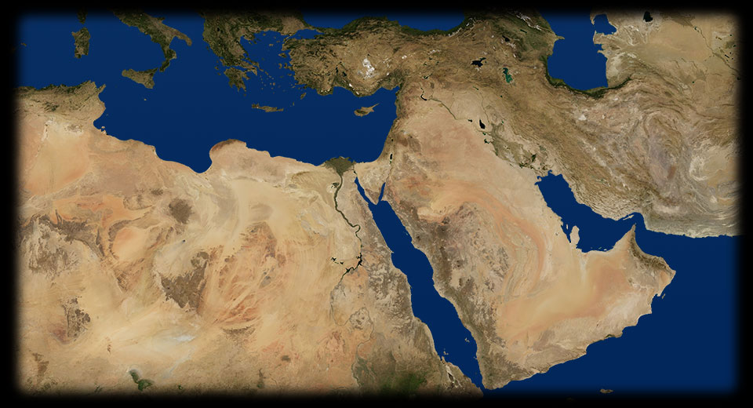
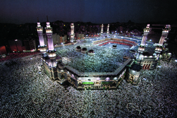
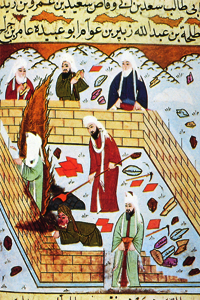

- 230 650
- 250 620
- 390 680
- 300 650
- 250 520
- 320 550
- 350 570
- 310 580
- 250 550
L'ARABIA
L’Arabia è una penisola arida, formata quasi interamente da deserto. Nel deserto ci sono oasi, zone più fertili per la presenza di acqua, luoghi di scambio e di passaggio. Nelle oasi più grandi sorgono città di mercanti.L'UNIFICAZIONE
632-634: Il califfo Abu Bakr completa l’unificazione dell’Arabia.ZONA MERIDIONALE
Anche la zona meridionale è fertile e dal clima temperato. È abitata da popolazioni sedentarie di agricoltori.IL DESERTO
Il deserto è abitato da beduini nomadi, organizzati in tribù spesso in lotta tra loro, che vivono di allevamento e scortano nel deserto le carovane di mercanti.MEDINA
622: Egìra (emigrazione) di Maometto a Yatrib, rinominata nel 622 Medina, “la città del Profeta”. Da questo momento inizia il computo del tempo per i musulmani.
632: Morte di Maometto.LA MECCA
610-632: Rivelazioni coraniche.LA MECCA
Nonostante oggi i precetti dell’islam vietino di raffigurare Maometto, nei secoli passati vennero prodotte molte raffigurazioni del Profeta: questa miniatura, che lo ritrae durante una predicazione, proviene da un codice persiano del XIII secolo.- 
LA MECCA
La Grande Moschea, la cui fondazione risale al VI secolo, ma che deve il suo aspetto attuale a molti interventi di trasformazione e ampliamento, custodisce al suo interno il santuario della kaa’ba, di forma cubica. È meta ogni anno di un grandissimo numero di pellegrini: ogni musulmano, infatti, è tenuto a compiere il pellegrinaggio alla Mecca almeno una volta nella vita. - 
MEDINA
La prima moschea del mondo islamico è secondo la tradizione quella costruita da Maometto a Medina; questa miniatura turca del 1595 ci mostra all’opera il profeta, con il volto velato secondo i precetti islamici per la sua raffigurazione, che erige l’edificio con alcuni seguaci.